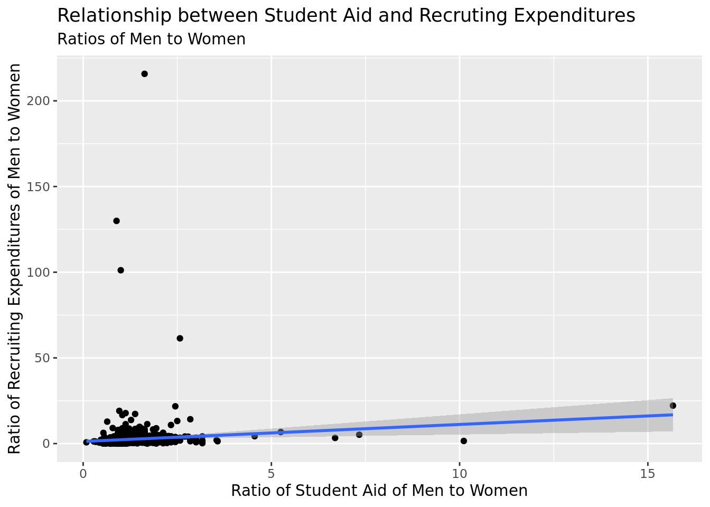
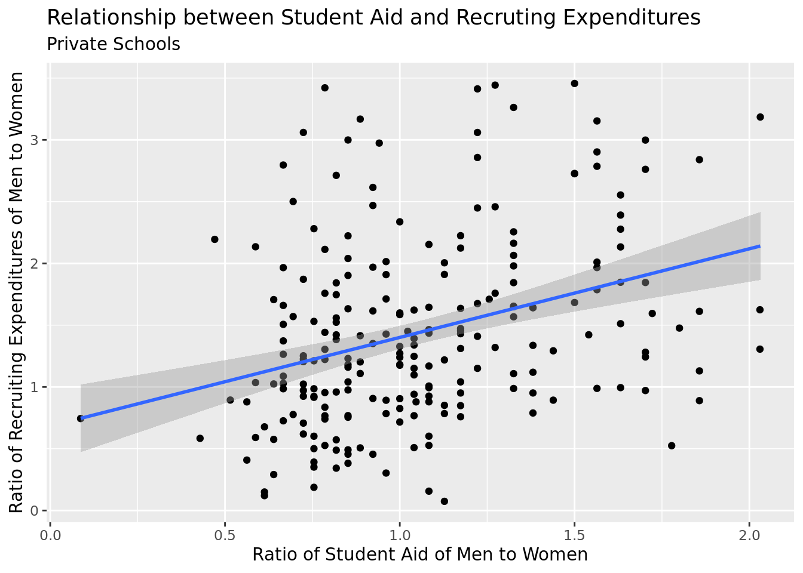
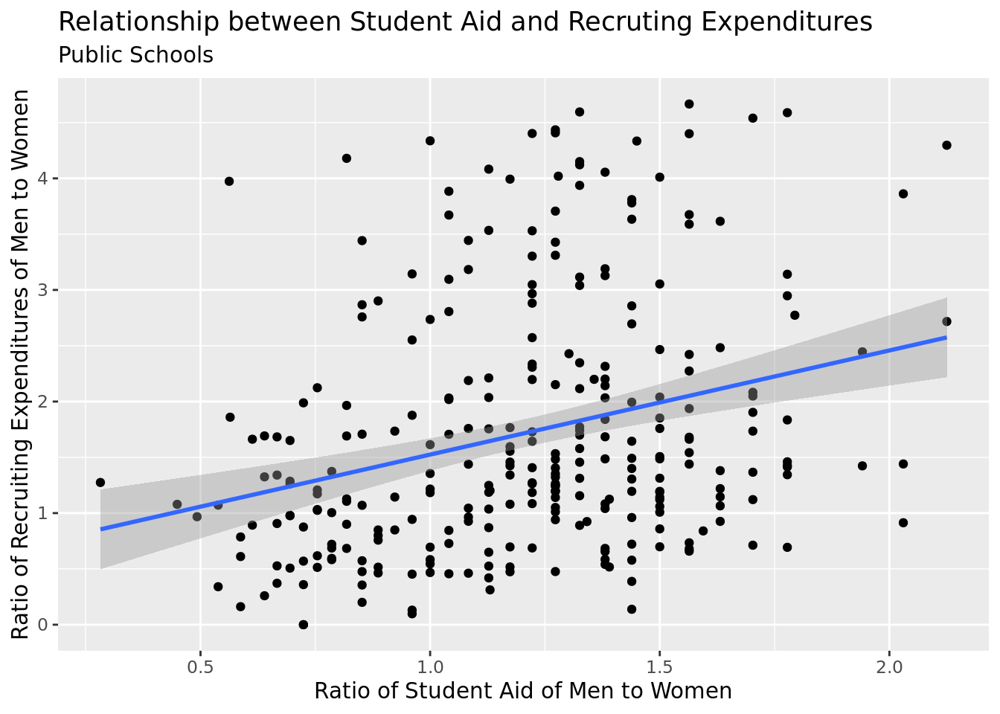

── Attaching packages ─────────────────────────────────────── tidyverse 1.3.2 ──
✔ ggplot2 3.4.0 ✔ purrr 1.0.0
✔ tibble 3.1.8 ✔ dplyr 1.0.10
✔ tidyr 1.2.1 ✔ stringr 1.5.0
✔ readr 2.1.3 ✔ forcats 0.5.2
── Conflicts ────────────────────────────────────────── tidyverse_conflicts() ──
✖ dplyr::filter() masks stats::filter()
✖ dplyr::lag() masks stats::lag()
── Attaching packages ────────────────────────────────────── tidymodels 1.0.0 ──
✔ broom 1.0.2 ✔ rsample 1.1.1
✔ dials 1.1.0 ✔ tune 1.0.1
✔ infer 1.0.4 ✔ workflows 1.1.2
✔ modeldata 1.0.1 ✔ workflowsets 1.0.0
✔ parsnip 1.0.3 ✔ yardstick 1.1.0
✔ recipes 1.0.3
── Conflicts ───────────────────────────────────────── tidymodels_conflicts() ──
✖ scales::discard() masks purrr::discard()
✖ dplyr::filter() masks stats::filter()
✖ recipes::fixed() masks stringr::fixed()
✖ dplyr::lag() masks stats::lag()
✖ yardstick::spec() masks readr::spec()
✖ recipes::step() masks stats::step()
• Use suppressPackageStartupMessages() to eliminate package startup messagesThe Charity of NCAA Sports
Rows: 1,080
Columns: 28
$ unitid <int> 100654, 100663, 100706, 100724, 100751, 100830, 10…
$ institution_name <chr> "Alabama A & M University", "University of Alabama…
$ addr1_txt <chr> "4900 Meridian Street", "Administration Bldg Suite…
$ addr2_txt <chr> "", "", "", "", "", "", "", "", "", "", "", "", ""…
$ city_txt <chr> "Normal", "Birmingham", "Huntsville", "Montgomery"…
$ state_cd <chr> "AL", "AL", "AL", "AL", "AL", "AL", "AL", "AL", "A…
$ zip_text <int> 35762, 352940110, 35899, 361040271, 354870100, 361…
$ ClassificationCode <int> 2, 1, 5, 2, 1, 5, 1, 12, 9, 12, 12, 2, 12, 12, 4, …
$ classification_name <chr> "NCAA Division I-FCS", "NCAA Division I-FBS", "NCA…
$ ClassificationOther <chr> "", "", "", "", "", "", "", "", "", "", "", "", ""…
$ EFMaleCount <int> 1849, 3965, 3965, 1171, 12336, 1103, 11348, 1116, …
$ EFFemaleCount <int> 2814, 6387, 2753, 2118, 15387, 2270, 11060, 1625, …
$ EFTotalCount <int> 4663, 10352, 6718, 3289, 27723, 3373, 22408, 2741,…
$ sector_cd <int> 1, 1, 1, 1, 1, 1, 1, 4, 2, 4, 4, 1, 4, 4, 1, 4, 4,…
$ sector_name <chr> "Public, 4-year or above", "Public, 4-year or abov…
$ STUDENTAID_MEN <int> 2120835, 4337701, 1596000, 2536436, 9183743, 99818…
$ STUDENTAID_WOMEN <int> 1649771, 3327452, 1378163, 1795545, 7986599, 13023…
$ STUDENTAID_COED <int> NA, 91511, NA, NA, NA, NA, NA, NA, NA, NA, NA, 727…
$ STUDENTAID_TOTAL <int> 3770606, 7756664, 2974163, 4331981, 17170342, 2300…
$ STUAID_MEN_RATIO <int> 56, 56, 54, 59, 53, 43, 54, 50, 66, 42, 64, 57, 53…
$ STUAID_WOMEN_RATIO <int> 44, 43, 46, 41, 47, 57, 46, 50, 34, 58, 36, 41, 47…
$ STUAID_COED_RATIO <int> 0, 1, 0, 0, 0, 0, 0, 0, 0, 0, 0, 2, 0, 0, 5, 0, 0,…
$ RECRUITEXP_MEN <int> 51495, 39209, 16446, 44407, 637794, 7054, 166893, …
$ RECRUITEXP_WOMEN <int> 42965, 16144, 12261, 34022, 96605, 11420, 117118, …
$ RECRUITEXP_COED <int> NA, 0, NA, NA, NA, NA, NA, NA, NA, NA, NA, 0, NA, …
$ RECRUITEXP_TOTAL <int> 94460, 55353, 28707, 78429, 734399, 18474, 284011,…
$ ratio_mw_sa <dbl> 1.2727273, 1.3023256, 1.1739130, 1.4390244, 1.1276…
$ ratio_mw_ep <dbl> 1.1985337, 2.4287042, 1.3413262, 1.3052437, 6.6020…Introduction
Context
Duke University is intrinsically connected to its sports program. Most famously known for their Men’s Division 1 Basketball and Football teams, as of 2020, Duke makes an estimated $33,382,946 and $39,669,829 in revenue, respectively (Laster, Jordan, et al. “The Haves and the Have-Nots: Inequities Amongst Duke University’s Sports Teams.” The Haves and the Have-Nots: Inequities Amongst Duke University’s Sports Teams | Black In Blue, 2020, https://blackinblue.trinity.duke.edu/haves-and-have-nots-inequities-amongst-duke-universitys-sports-teams.). Furthermore, Duke spends approximately $1,329,949 per Men’s basketball player and $217,047 per football player (Ibid.). Duke’s 2020 Equity in Athletics Disclosure Act (EADA) revealed that Duke spent a total of $57,114,331 on men’s sports teams and a total of $25,472,405 on women’s sports teams (Ibid.) This figure includes recruitment cost, amongst other things. Nationwide, there is a recorded inequity between NCAA sports (Meredith, L. (2017, June 21). NCAA Title IX Report: Spending up, gender gaps remain. The Seattle Times. https://www.seattletimes.com/sports/ncaa-title-ix-report-spending-up-gender-gaps-remain/). As Duke students, we were curious: is this the status quo in collegiate athletics?
The Dataset
The dataset we use to explore this topic comes from the U.S. Department of Education’s Equity in Athletics Disclosure Act, which requires many schools to provide information regarding financial expenditure and revenue generation of their athletics departments. The dataset spans 4274 variables, including school names, locations, and cost breakdowns. There are 1844 observations in this dataset; each observation is a different school. The most recently published dataset is from 2021, which is the dataset we use.
Explanation of Topic
Our topic will specifically observe and investigate how much, on average, universities spend on men and womens’ recruitment funds. We will create a model that predicts this figure, based on university’s current expenditure on athletic scholarships for student athletes. We will break down a number of variables within the data, looking at whether the institution is public versus private, has a football program or not, and what athletic division it falls under (I, II, or III) The reason we chose these variables are as follows: (1) the monetary means of public institutions have a wide range – larger and older private schools often having more means, while samller private schools and public schools having less; (2) through the research for our literature review, it was found that the largest spending gap on sports occurred in schools that had a football program versus schools without a football program, schools with football often spending over $5 million more on sports programs; (3) division matters a great deal when considering expenditure on sports, with division I schools often allocating far more than division II and III (Desrochers, D. M. (2013, January). Academic spending vs. athletic spending: Who wins? . Delta Cost Project. Retrieved from https://www.air.org/sites/default/files/downloads/ report/Academic-Spending-vs-Athletic-Spending.pdf). Our research question is: To what extent can the ratio of male to female athletic scholarships predict the male to female ratio of recruitment funds? We hypothesize that the ratio will, to a high degree, predict the recruitment funding — as schools who allocate more money into students’ financial aid will be willing to designate more money for their recruitment.
Ethical Issues
There are very few ethical issues anticipated with this investigation. However, it is important to note that source biases are a likely phenomenon. We must be careful with many self-reported information from university sites, and assuring that the data published can be verified. An additional bias concern is disproportionately represented data. The data could represent certain regions or types of schools, which could skew the results. Transparency of the data is also an ethical concern to note. It is important that the data is transparently presented, and that the methods used to analyze the data are clearly explained. This will help ensure that the findings are trustworthy and can be used for the intended purpose. Lastly, the accuracy of the data is a possible ethical issue. It is possible that the data in the dataset is inaccurate or incomplete, which could lead to incorrect conclusions or decisions being made based on the data. These are the possible ethical issues that have been noted in the investigation.
Methodology
Research question: To what extent can the ratio of male to female athletic scholarships predict the male to female ratio of recruitment funds?
Private vs. public
Football vs. no football
Division
We will answer our research question by first creating subsets of our data by the factors listed above, and removing any outliers using the interquartile range rule. Then we create regression models comparing athletic scholarships to recruitment funds, and then calculate the AIC for each model to determine the effectiveness of each predictor. We chose to use regression models because our research question looks at the extent to which one variable can predict another. We chose to use AIC calculations because we are comparing the effectiveness of prediction based on which variables are included in the model, and AIC is an effective calculation for comparing models that is not simply dependent on the number of predictors.
`geom_smooth()` using formula = 'y ~ x'
0.0076810675527727
7723.431 While filtering our data sets, we made the decision to remove outliers using the formula (1st Quadrant - 1.5(IQR)), (3rd Quadrant + 1.5(IQR)). While originally analyzing our data, the outliers strongly influenced what seemed like an exponential model. As a result, we decided to take out the outliers and calculate a linear model to examine how strongly the male to female ratio of student aid is related to the male to female ratio of recruiting expenditures. Below is the change in our plot and linear model fit.
`geom_smooth()` using formula = 'y ~ x'0.00281077907311822
7409.35 Private vs. public schools have two very different financial structures, so we thought there may be a tangible difference in how the two ratios relate to each other. Below, we fit a linear model and calculated the AIC and r squared for each.
`geom_smooth()` using formula = 'y ~ x'
0.112223105145674
490.8492 `geom_smooth()` using formula = 'y ~ x'
0.0818346252647914
869.6874 For most collegiate athletic programs in the United States, football serves as the primary source of revenue. As a result, we decided to look at how the inclusion or absence of football impacted the fit of the linear model. Below, there’s the AIC and r squared calculated for each.
`geom_smooth()` using formula = 'y ~ x'0.0786090754011517
2484.094 `geom_smooth()` using formula = 'y ~ x'0.0251744256907911
374.6477 Finally, as the level of competition increases, so does the level of finances. With that being said, we split the data into three categories by division and looked at how it impacted a linear model fit. The AIC and r squared values are calculated below for each.
`geom_smooth()` using formula = 'y ~ x'0.103162960388741
1167.375 `geom_smooth()` using formula = 'y ~ x'0.126985443525168
554.4589 `geom_smooth()` using formula = 'y ~ x'0.0389448055922119
-1.120288 To more fully answer our research question, we created a multivariate prediction model to reach conclusions about the factors that influence the male to female ratio of recruitment funds. Below, we wrangled our data set to create three new variables, school_type(private or public), football(football or no football), and division (one, two, or three). Then, we fit our multivariate prediction model.
\(\hat{ratio\_mw\_ep} = 3.688 -0.651({school\_type}) - 0.829({division\_three}) - .848({division\_two}) - 1.592({no\_football}) + 0.086({ratio\_mw\_sa})\)
Our model predicts that private, division one football schools have the highest ratio of male to female recruitment funds. Further, whether a school has football holds the highest weight as an influencing factor. Further, the model displays that there is a slight positive correlation between a higher male to female student aid ratio and a higher male to female recruitment fund ratio.
Results
This prediction model was aimed at testing whether the financial allocation universities spent on athletic scholarship could predict the amount they allocated for recruitment, and whether the distribution between men and womens’ sports was equitable. We filtered the data through three different variables: whether the school had a football program or not, whether the school was public or private, and whether the school was Division I, II, or III. Notably, many of these groups did not have equal numbers of schools, and division 3 is only 9 schools.
After filtering the data, we ran an AIC metric on all the subsets of the data to compare the different regression models. There was a more accurate trend observed in the private vs. public data-set, meaning that model offers the best fit. Amongst all the graphs, there is a low positive correlation observed. Then we ran an R squared test. This would tell us the significance in the correlation between the two variables: scholarship funds versus recruitment funds. The R squared test revealed that there is a very insignificant correlation between the two chosen variables.
| Data: | All Schools | All Schools Outliers Removed | Private Schools | Public Schools |
| AIC: | 7723.431 | 7409.35 | 490.849 | 869.687 |
| R Square: | 0.008 | 0.003 | 0.112 | 0.082 |
| Data: | Football Schools | No Football Schools | DI Schools | DII Schools | DIII Schools |
| AIC: | 2484.094 | 374.648 | 1167.375 | 554.459 | -1.120 |
| R Square: | 0.079 | 0.025 | 0.103 | 0.127 | 0.039 |
Without filtering the data at all and not faceting the data by any groups, there is a 0.008 correlation between the two variables. This shows that it is incredibly low positive correlation. Additionally, There is an AIC of 7723.431. After filtering the data and removing outliers, we see that the AIC decreased, indicating that removing the outliers reduced the variability in the data, and that the data was better fit after removing outliers.
As shown in the table, the model looking at the relationship in division three between the male to female ratios of athletic student aid and recruitment funds has a negative AIC. This strength of model fit can be explained by the lack of data, given most division three schools cannot give athletic scholarships.
In conclusion, we have found a lack of a relationship between the male to female ratio of student aid and male to female ratio of recruiting expenditures. When filtering for our variables, that is, school type, football, and division, the relationship became slightly stronger, as indicated by higher r squared values and lower AIC scores.
References:
Laster, Jordan, et al. “The Haves and the Have-Nots: Inequities Amongst Duke University’s Sports Teams.” The Haves and the Have-Nots: Inequities Amongst Duke University’s Sports Teams | Black In Blue, 2020, https://blackinblue.trinity.duke.edu/haves-and-have-nots-inequities-amongst-duke-universitys-sports-teams.
Meredith, L. (2017, June 21). NCAA Title IX Report: Spending up, gender gaps remain. The Seattle Times. https://www.seattletimes.com/sports/ncaa-title-ix-report-spending-up-gender-gaps-remain/.
Desrochers, D. M. (2013, January). Academic spending vs. athletic spending: Who wins? . Delta Cost Project. Retrieved from https://www.air.org/sites/default/files/downloads/ report/Academic-Spending-vs-Athletic-Spending.pdf.